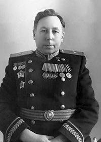
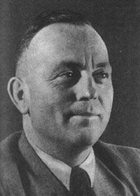
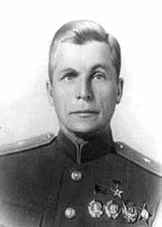

Лавочкин Семён Алексеевич
Семён Алексеевич родился в 1900 году в Смоленске. В 1939 стал главным конструктором по самолётостроению; с 1956 - генеральным конструктором.
Самый известный самолёт конструкции Семёна Алексеевича Лавочкина – Ла-5. Знаменитый истребитель был создан в результате «состыковки» планера не очень удачного самолёта ЛаГГ-3 с мощным звездообразным двигателем воздушного охлаждения М-82 (АШ-82) конструкции Швецова. Новый двигатель позволил достичь отличных характеристик на малых высотах – «Лавочкин» по скорости превосходил Fw-190А на 60 км/ч. Важным преимуществом было и то, что большая часть конструкции самолёта изготавливалась из дельта-древесины, прочной и дешёвой. Вооружение «Лайбы», как его называли лётчики, по сравнению с ЛаГГами было улучшено и состояло из двух пушек ШВАК-20 с боекомплектом по 170 снарядов на ствол. Лётчики очень уважали Ла-5 за его отменные боевые возможности, простоту в управлении, отличную живучесть. Именно на Ла-5 лучшие советские асы, такие как Иван Кожедуб, Алексей Алелюхин, Султан Амет-Хан и Евгений Савицкий, одержали большинство своих побед. А под Курском Александр Горовец уничтожил в одном бою девять бомбардировщиков Ju-87 (этот рекорд не побит до сих пор). Однажды командир знаменитой «Нормандии» Луи Дельфино совершил пробный полет на «Лавочкине», после чего пришел в неописуемый восторг и просил дать французам Ла-5, а не Як-1. Немцы называли Ла-5 «Neue Rata», «Новая Крыса» («Крыса» - прозвище, присвоенное фашистами истребителю И-16 ещё в Испании). После разработки форсированного мотора АШ-82ФН с непосредственным впрыском топлива в цилиндры была выпущена новая модификация истребителя, Ла-5ФН, отличавшаяся пониженным гаргротом и кабиной с круговым обзором, а так же некоторыми доработками конструкции фюзеляжа. Лучший советский истребитель периода Великой Отечественной Войны, Ла-7, был получен в результате продувки в аэродинамической трубе модели Ла-5ФН, выявления и последующего исправления недостатков. Планер самолёта стал легче и аэродинамически чище. Вооружение усилили до трёх пушек Б-20 (хотя на ранние Ла-7 всё ещё ставили ШВАКи).
Наиболее засекреченной работой ОКБ Лавочкина была намного опередившая время МКР «Буря», носитель термоядерного заряда. Огромный самолёт–снаряд был оснащён прямоточными и ракетными двигателями. Навигация осуществлялась по звёздам, автоматически. Было произведено несколько удачных пусков. Но программа была закрыта из-за того, что государство не могло одновременно финансировать «Бурю» и ракету Р-7 конструкции С.П.Королёва.

Курт Танк
С 1924 года начал работу инженером – конструктором на фирме «Робах-металлфлюгцойгбау». В 1931 возглавил конструкторское бюро предприятия Focke-Wulf в Бремене.
Самым знаменитым и широко известным самолётом, построенным Куртом Танком, безусловно, является истребитель Focke-Wulf FW-190. Этот истребитель, серийное производство которого было начато в 1941 году, составлял основную ударную силу Люфтваффе. В основе его лежала принципиально новая концепция воздушного боя, впервые выдвинутая именно Куртом Танком: главным было мощное вооружение, скороподъёмность и скорость. В конструкцию FW-190 была заложена колоссальная живучесть: коэффициент запаса прочности конструкции планера был очень велик - 1,2. FW-190 отличался очень высоким качеством сборки и послесборочной доводки – на этом настаивал сам Курт Танк. Истребитель FW-190 неоднократно модернизировался, оставаясь самым грозным противником для авиации союзников в течение всей войны. В 1944-1945 на его базе был создан великолепный высотный истребитель Та-152, поставивший рекорд скорости – 746 км/ч. Во время полёта на этом самолёте с Танком произошёл один случай, прекрасно иллюстрирующий боевые характеристики машины. Весной 1945 года Танк, небывший военным лётчиком, но умевший неплохо пилотировать самолёт, перегонял предсерийный Та-152 на военный аэродром в г. Коттобус. На высоте около двух километров за неманеврирующим самолётом «пристроилась» четвёрка «Мустангов» из 356-й эскадрильи 8-й Воздушной армии США. Американцы, видимо, поняли, что диковинным самолётом управляет не боевой лётчик, и решили взять немца в «коробочку» и посадить. Но план провалился: Танк просто включил форсаж и ушел от «Мустангов» с набором высоты, «как от стоячих».
Не менее известным был разведчик–корректировщик FW-189, который советские солдаты прозвали «рамой» из-за его двухбалочной схемы. Кабина с большой площадью остекления создавала великолепный обзор и делала самолет идеальным для выполнения поставленных задач.
Одним из лучших авиалайнеров того времени был FW-200 «Кондор», спроектированный Танком в 1936 году по собственной инициативе. Аэродинамически FW-200 был очень чист, а лётные характеристики «Кондора» были прямо таки выдающимися: во время беспосадочного перелёта из Берлина в Нью-Йорк расстояние в 6558 км было пройдено за 24 часа 55 минут. Уинстон Черчилль назвал этот самолёт «Бичом Атлантики». Интересным фактом является и то, что Гитлер и Геринг выбрали своим персональным транспортом именно FW-200. Однако в боях выявился основной недостаток «Кондоров» - двигатели, и на протяжении службы с ними довольно часто происходили аварии.

Ильюшин Сергей Владимирович
Сергей Владимирович родился под Вологдой в семье крестьянина. С 1919 года авиамеханик, а в 1921 году стал начальником авиаремонтного поезда. С 1935 Сергей Владимирович - главный конструктор, в 1956-70 - генеральный конструктор.
Самолётом, прославившим своего конструктора на весь мир, стал штурмовик Ил-2. Принципиальная новизна самолёта состояла в том, что слоёная броня не просто защищала экипаж и жизненно важные органы самолёта, но так же и входила в состав силовой конструкции планера. Очень значительным достоинством самолёта было то, что на него устанавливался один мотор (Ам-38, 1720 л.с.). Таким образом Ильюшин сэкономил для страны огромное количество ресурсов и времени. Изначально предполагалось выпускать двухместный вариант штурмовика, но в это дело вмешался Сталин, всегда во всём разбиравшийся лучше любого специалиста, и на конвейер поставили одноместный самолёт. Отсутствие стрелка привело к огромным потерям: на беззащитные с задней полусферы «Илы» охотились даже бомбардировщики. Только к 1942 году спину лётчика прикрыл стрелок с пулемётом УБТ. После установки 23-мм пушки ВЯ Ил-2 смогли бороться с немецкими лёгкими танками, а новая пушка НС-37 «прошивала» даже верх танков Pz.Kpfw.VI, знаменитых «Тигров». За всю войну Германия так и не смогла создать самолёт, способный сравниться по боевым и эксплуатационным характеристикам с «Илами». Немцы называли советские «летающие танки» «чёрной смертью», а Геринг заявил, что Ил-2-это «главный враг германской армии». Ил-2 стал самым массовым самолётом в мире. Ил-2 стал родоначальником нового класса боевой авиации, современными представителями которого являются самолёты Су-25, Су-39, А-10 «Тандерболт II».
Бартини Роберт Людовигович
Роберт Людовигович родился в Фиуме (Риека, Югославия).
В 1923 году иммигрировал в СССР. В 1937 Бартини был неоправданно обвинён в связях с расстрелянным «врагом народа» - маршалом Тухачевским и репрессирован. В 1956 реабилитирован.
Осенью 1935 под его руководством был создан 12-местный пассажирский самолет «Сталь-7» с крылом «обратная чайка». В 1936 году он экспонировался на Международной выставке в Париже, а в августе 1939 на нем был установлен международный рекорд скорости на дистанции 5000 км - 405 км/ч. Впоследствии этот самолёт превратился в любимый лётчиками дальний бомбардировщик Ер-2, в ходе войны неоднократно открывавший над Берлином бомболюки.
Конструкции Бартини отличались новаторством, свободой и смелостью. Одним из таких проектов был самолёт «Р» - сверхзвуковой одноместный экспериментальный истребитель, построенный по схеме «летающее крыло» с крылом малого удлинения с большой стреловидностью передней кромки, двухкилевым вертикальным оперением на концах крыла и комбинированной жидкостно-прямоточной силовой установкой. Р-114 - зенитный истребитель-перехватчик с четырьмя ЖРД конструкции В.П.Глушко по 300 кгс тяги, со стреловидным крылом, имеющим управление пограничным слоем для увеличения аэродинамического качества крыла. Р-114 должен был развивать невероятную для 1942 скорость в 2 Маха! Но осенью 1943 г. по неизвестным причинам ОКБ было закрыто.
В начале 70-х годов Бартини предложил создать суборбитальный истребитель-перехватчик, задачей которого было уничтожение вражеских спутников разведки и связи. Необычной была система выхода на орбиту: одна ракета-носитель должна была выводить сразу 3 перехватчика.